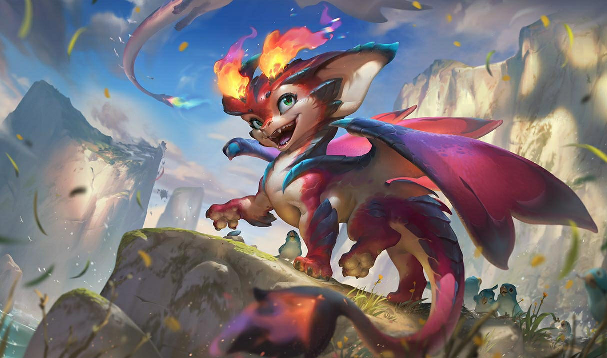

El ADC (tirador) es el rol de daño a distancia que se enfoca en ataques básicos para escalar en la partida. Es débil al inicio pero muy poderoso en el juego tardío.
Tipos de Campeones en ADC
- Hipercarries: Escalan mucho en daño. Ejemplo: Jinx, Vayne, Kog'Maw.
- Poke: Castigan desde lejos. Ejemplo: Varus, Ezreal, Ashe.
- Burst ADCs: Alto daño rápido. Ejemplo: Miss Fortune, Draven, Kalista.
Consejos para Jugar en ADC
- Posiciónate bien: No te expongas demasiado en peleas.
- Farmea bien: Más oro significa más daño en el juego tardío.
- Comunícate con tu soporte: Una buena sinergia marca la diferencia.
¿Que campeones se pueden jugar en este rol?

Jhin
Campeón de daño a larga distancia y precisión letal. Ideal para eliminar a enemigos con sus disparos bien calculados.

Nilah
Campeona de combate cuerpo a cuerpo y curación. Perfecta para sostener el daño mientras ayuda a su equipo con su poder curativo.

Smolder
Campeón de daño en área y control del terreno. Perfecto para controlar las zonas de pelea y aplicar presión constante.
¿Es un rol recomendado para principiantes?
- Sí, si te gusta: El rol de ADC (Attack Damage Carry) puede ser una excelente opción si te gusta infligir enormes cantidades de daño desde la distancia y ser el principal responsable de eliminar enemigos en las peleas de equipo. Si disfrutas de un estilo de juego que premia la precisión mecánica, la buena posición en combates y la escalada progresiva a lo largo de la partida, ser ADC puede ser muy gratificante. Además, trabajar en conjunto con tu soporte genera una dinámica única, donde aprenderás la importancia de la sinergia y la cooperación en el carril inferior. Si te motiva mejorar tus reflejos, manejar recursos como el "last hit" de súbditos y tomar decisiones críticas bajo presión en peleas grupales, definitivamente vas a disfrutar de este rol.
- No, si prefieres: Por otro lado, si no te gusta ser un objetivo prioritario para el equipo enemigo o si prefieres roles más resistentes que puedan aguantar errores, el ADC podría no ser el rol ideal para vos. Los tiradores suelen ser frágiles y dependen mucho de su posicionamiento y de la protección de su equipo para sobrevivir y brillar. Además, requieren mucha paciencia durante la fase de líneas, ya que cualquier error temprano puede retrasar mucho su crecimiento. Si preferís roles donde puedas tomar más riesgos sin ser tan castigado, o donde tengas un impacto fuerte en el juego desde los primeros minutos sin necesidad de farmear tanto, quizás deberías considerar otras posiciones como Top, Jungla o incluso Support.